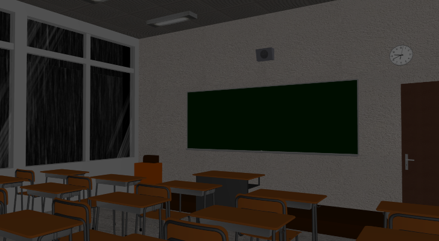

School Game
Downloads (Portable ZIP)
Downloads are currently unavailable
Lambda Engine Specifications
Engine Source code on GitHub
- Diffuse, Specular, Emissive and Normal Texture Maps
- Glow and Transparency Effects
- Character Animation
- Custom Compressed File Format for Game Assets
- Skybox (Cubemap)
- Built-in Profiler
- Screenshot Function
- Optimized to reduce Context Switches and Draw Calls
- 3D Mouse Picking (Returns currently pointed at object, its texture coordinates and world coordinates)
- 3D Screens, Drawing on Surfaces
- GPU Accelerated
- Only 1x1 Pixel Render: Very Fast (MVP Matrix Hack)
- Shadow Volumes
- Pros: Dynamic, Pixel Perfect, Hard Shadows, All Light Sources
- Cons: Only Closed Geometry
- Cascaded Shadow Maps
- Pros: Dynamic, Soft Shadows, Works with all Geometry
- Cons: Only Directional Light (e.g. Sunlight)
-
Baked Shadows (Prerendered)
- Pros: Best Performance and Quality
- Cons: Static
- Physics Engine (Boxes, Stairs, Slopes etc.)
- Time Scaling prevents glitches
- The duration of a game tick is determined depending on the speed of the objects
- 3D Audio (works with Headphones)
- Network Support (TCP/UDP)
- Interactive Screens (Offscreen Rendering)
Visit my GameDev Blog for screenshots and more information.